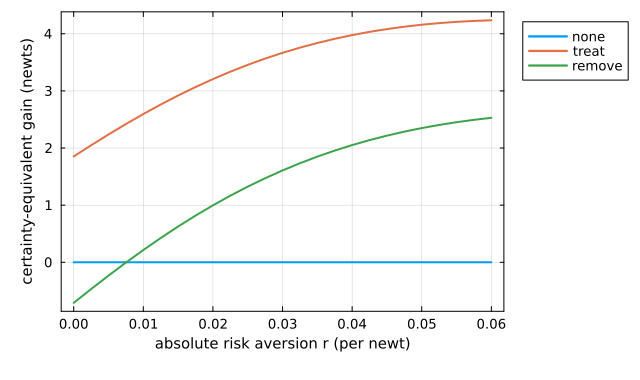

Risk attitude and several attributes
Simon Frost
- Motivation
- A lottery over a count
- The pond, valued without risk attitude
- Risk attitude on a table of runs
- Two attributes: uninfected and infected
- Summary
Motivation
So far a utility has been a count of animals. A count is a linear utility: sixty newts for certain are worth exactly as much as an even chance of none or a hundred and twenty. That is risk neutrality, and many managers of small populations do not hold it. A pond that ends with a handful of newts may not recover, so the bad outcomes weigh more than their share.
This vignette keeps the outcomes as counts of animals and changes only how they are valued:
- the certainty equivalent and the risk premium of a lottery over a count;
- utilities with a risk attitude,
ExponentialUtilityandPowerUtility, applied to a table of simulator runs; - two attributes at once, uninfected and infected animals, with
AdditiveUtilityand the multiplicative form of Keeney and Raiffa,MultiplicativeUtility.
There is still no money anywhere. All numbers are illustrative: the model is the toy pond of vignette 11, and its parameters are not estimates for any real species or site.
A lottery over a count
Take an even chance of 0 or 40 newts. Its mean is 20. A utility u turns the lottery into an expected utility, and the certainty equivalent turns that back into newts: the sure number that is exactly as good as the lottery, CE = u⁻¹(E u(X)).
using DecisionAnalysis
using Random: Xoshiro
include(joinpath("..", "_common.jl"))
include(joinpath("..", "_toy_pond.jl"))
lottery = [0, 40]
utilities = ["linear" => LinearUtility(:newts),
"exponential, r = 0.02" => ExponentialUtility(:newts; risk_aversion=0.02),
"exponential, r = 0.05" => ExponentialUtility(:newts; risk_aversion=0.05),
"power, ρ = 0.5" => PowerUtility(:newts; risk_aversion=0.5),
"exponential, r = −0.02 (risk-seeking)" => ExponentialUtility(:newts; risk_aversion=-0.02)]
md_table(["utility", "certainty equivalent (newts)", "risk premium (newts)"],
[[name, Float64(certainty_equivalent(u, lottery)), Float64(risk_premium(u, lottery))]
for (name, u) in utilities])| utility | certainty equivalent (newts) | risk premium (newts) |
|---|---|---|
| linear | 20 | 0 |
| exponential, r = 0.02 | 16.1 | 3.9 |
| exponential, r = 0.05 | 11.32 | 8.68 |
| power, ρ = 0.5 | 10 | 10 |
| exponential, r = −0.02 (risk-seeking) | 23.9 | -3.9 |
The risk premium is the mean minus the certainty equivalent: the number of newts of expected outcome a manager would give up to be rid of the risk. It is zero for the linear utility, positive for a risk-averse one and negative for a risk-seeking one.
The two families differ in what the attitude is attached to.
ExponentialUtility(name; risk_aversion=r)has constant absolute risk aversion:u(x) = (1 − exp(−r x)) / r. Adding ten newts to every outcome adds ten to the certainty equivalent.1 / ris the risk tolerance, in newts.PowerUtility(name; risk_aversion=ρ)has constant relative risk aversion:u(x) = x^(1 − ρ) / (1 − ρ). Doubling every outcome doubles the certainty equivalent. It needs a positive count whenρ ≥ 1, since a count of zero then has utility −∞.
cara = ExponentialUtility(:newts; risk_aversion=0.05)
crra = PowerUtility(:newts; risk_aversion=0.5)
md_table(["lottery", "exponential CE", "power CE"],
[["0 or 40", certainty_equivalent(cara, [0, 40]), certainty_equivalent(crra, [0, 40])],
["10 or 50 (ten more)", certainty_equivalent(cara, [10, 50]), certainty_equivalent(crra, [10, 50])],
["0 or 80 (doubled)", certainty_equivalent(cara, [0, 80]), certainty_equivalent(crra, [0, 80])]])| lottery | exponential CE | power CE |
|---|---|---|
| 0 or 40 | 11.32 | 10 |
| 10 or 50 (ten more) | 21.32 | 26.18 |
| 0 or 80 (doubled) | 13.5 | 20 |
The pond, valued without risk attitude
The problem is that of vignette 11. A fungal disease has reached a pond of newts and the manager can mount one intervention in week 3, or none: none (the baseline), treat (catch 70% and bathe them in antifungal; handling kills 8% of those caught) or remove (catch 70% and remove those that test positive, with 12% false positives).
belief = SampleBelief(toy_draws(Xoshiro(11), 300))
table = outcomes(ToyPond(), TOY_ACTIONS, belief; replicates=20, seed=2026)OutcomeTable(300 draws × 3 actions × 20 replicates; outcomes uninfected, infected, alive, handled; 18000 runs ok, 0 failed, 0 absent)Counting every newt alive at the end, the risk-neutral analysis is:
alive = IndividualsUtility(:alive)
neutral = DecisionProblem(payoff_table(table, alive; baseline=:none), belief; baseline=:none)
md_table(["action", "expected gain over no intervention (newts)", "standard error"],
[[e.action, Float64(e.value), e.standard_error]
for e in expected_utility_estimates(neutral)])| action | expected gain over no intervention (newts) | standard error |
|---|---|---|
none | 0 | 0 |
treat | 1.85 | 0.4 |
remove | -0.71 | 0.4 |
On average treat saves a couple of newts and remove loses some: removal takes animals out of the pond, and in expectation that costs more than the infections it prevents.
Risk attitude on a table of runs
A utility with a risk attitude is not linear, and that changes the order of the calculation. The utility must be applied to every run, and only then averaged: the utility of the mean count of a cell is not the mean utility. payoff_table does this for any utility. One cell shows the difference:
averse = ExponentialUtility(:alive; risk_aversion=0.02)
cell_runs = [v for v in table.values[1, 1, :, findfirst(==(:alive), outcome_names(table))]]
md_table(["quantity", "value"],
[["runs of the cell (no intervention, draw 1)", join(Int.(cell_runs), ", ")],
["mean of the utilities of the runs (what `payoff_table` gives)", payoff_table(table, averse).Q[1, 1]],
["utility of the mean count (wrong)", averse(sum(cell_runs) / length(cell_runs))]]; digits=4)| quantity | value |
|---|---|
| runs of the cell (no intervention, draw 1) | 45, 43, 44, 43, 45, 45, 43, 44, 44, 43, 33, 45, 45, 44, 45, 43, 45, 44, 45, 44 |
mean of the utilities of the runs (what payoff_table gives) | 29.0652 |
| utility of the mean count (wrong) | 29.0943 |
Expected utility is now in units of utility and no longer a count of newts. certainty_equivalent on the outcome table returns to newts. For each action it takes the lottery over all its runs (a draw with its weight, then a replicate) and gives the expected count, the certainty equivalent and the risk premium:
summary = certainty_equivalent(table, averse)
base = summary[1].certainty_equivalent
md_table(["action", "expected newts alive", "certainty equivalent", "risk premium",
"certainty-equivalent gain over no intervention"],
[[s.action, Float64(s.expected_outcome), s.certainty_equivalent, s.risk_premium,
s.certainty_equivalent - base] for s in summary])| action | expected newts alive | certainty equivalent | risk premium | certainty-equivalent gain over no intervention |
|---|---|---|---|---|
none | 60.67 | 51.99 | 8.68 | 0 |
treat | 62.52 | 55.2 | 7.33 | 3.21 |
remove | 59.96 | 52.99 | 6.97 | 1 |
Every action carries a risk premium of several newts, because the number alive at the end varies a great deal between draws and runs. The premium of none is the largest: doing nothing leaves the widest spread of outcomes. That reverses one comparison. In expected newts remove was worse than doing nothing; in certainty equivalents it is slightly better, because removing infected animals trims the worst epidemics. treat is best either way.
The choice of r is a value judgement, like the weight on infected animals in earlier vignettes, so it is shown as a sweep:
rs = 0.0:0.0025:0.06
gain(r) = let s = certainty_equivalent(table, ExponentialUtility(:alive; risk_aversion=r))
[Float64(x.certainty_equivalent - s[1].certainty_equivalent) for x in s]
end
gains = reduce(hcat, [gain(r) for r in rs])
plt = Plots.plot(; xlabel="absolute risk aversion r (per newt)",
ylabel="certainty-equivalent gain (newts)")
for (i, a) in enumerate(TOY_ACTIONS)
Plots.plot!(plt, collect(rs), gains[i, :]; label=String(a))
end
plt
Figure 1: Certainty-equivalent gain over no intervention against the manager’s risk aversion (illustrative).
At r = 0 the gains are the expected gains of the risk-neutral table. As r grows both interventions gain on the baseline, and remove crosses from below it to above it at a small risk aversion.
The same decision problem goes through every rule and every value of information of the package; only the units change.
problem = DecisionProblem(table, averse; baseline=:none)
result = decide(problem, MaxExpectedUtility())
estimate = evpi(problem, SampleAverage())
md_table(["quantity", "value"],
[["action with the largest expected utility", first_choice(result)],
["EVPI, in units of utility (not newts)", Float64(estimate.value)],
["its standard error", estimate.standard_error]]; digits=3)| quantity | value |
|---|---|
| action with the largest expected utility | treat |
| EVPI, in units of utility (not newts) | 0.346 |
| its standard error | 0.022 |
Two attributes: uninfected and infected
The disease gives two counts at the end of a run: uninfected newts, of which more is better, and infected newts, of which fewer is better. Earlier vignettes combined them as uninfected − w × infected. That is an additive utility over two attributes, and AdditiveUtility writes it as such:
w = 1 // 2
reference = payoff_table(table, InfectionUtility(; weight=w))
additive = payoff_table(table, AdditiveUtility(:uninfected => 1, :infected => -w))
additive.Q == reference.QtrueThe usual way to state a multi-attribute utility is with every attribute scaled to [0, 1] between a worst and a best level, and weights that say how much the move from worst to best is worth on each. The largest pond in the draws has 120 newts, so the scales run from 0 to 120 uninfected (more is better) and from 120 to 0 infected (fewer is better):
N = 120
uninfected = LinearUtility(:uninfected; worst=0, best=N)
infected = LinearUtility(:infected; worst=N, best=0)
scaled = AdditiveUtility(uninfected => 2 // 3, infected => 1 // 3)
scaled((; uninfected=60, infected=30))7//12With weights 2/3 and 1/3 this is the same preference as uninfected − w × infected at w = 1/2 (a positive affine map of it), so it makes the same choice:
by_scaled = DecisionProblem(table, scaled; baseline=:none)
by_count = DecisionProblem(table, InfectionUtility(; weight=w); baseline=:none)
(decide(by_scaled, MaxExpectedUtility()).chosen, decide(by_count, MaxExpectedUtility()).chosen)([:treat], [:treat])The additive form assumes that what an improvement in one attribute is worth does not depend on the level of the other. The multiplicative form of Keeney and Raiffa drops that assumption with one more number. With weights k₁, k₂ it is
1 + K U = (1 + K k₁ u₁)(1 + K k₂ u₂),where the interaction constant K is fixed by the weights. If they sum to one, K = 0 and the form is additive. If they sum to more than one, the attributes are substitutes: doing well on either is already worth a lot. If they sum to less than one, they are complements: the manager wants a pond that has many uninfected newts and few infected ones at once.
forms = ["additive, weights 2/3 and 1/3" => scaled,
"substitutes, weights 0.8 and 0.8" => MultiplicativeUtility(uninfected => 0.8, infected => 0.8),
"complements, weights 0.3 and 0.3" => MultiplicativeUtility(uninfected => 0.3, infected => 0.3),
"infection first, weights 0.5 and 0.9" => MultiplicativeUtility(uninfected => 0.5, infected => 0.9)]
rows = map(forms) do (name, u)
p = DecisionProblem(table, u; baseline=:none)
scores = Float64.(aggregate(Expectation(), p))
K = u isa MultiplicativeUtility ? Float64(u.interaction) : 0.0
return [name, K, scores[1], scores[2], scores[3], first_choice(decide(p, MaxExpectedUtility()))]
end
md_table(["utility", "interaction K", "none", "treat", "remove", "choice"], rows; digits=4)| utility | interaction K | none | treat | remove | choice |
|---|---|---|---|---|---|
| additive, weights 2/3 and 1/3 | 0 | 0.6255 | 0.656 | 0.6446 | treat |
| substitutes, weights 0.8 and 0.8 | -0.9375 | 0.8615 | 0.8821 | 0.8803 | treat |
| complements, weights 0.3 and 0.3 | 4.4444 | 0.6055 | 0.6384 | 0.6266 | treat |
| infection first, weights 0.5 and 0.9 | -0.8889 | 0.9092 | 0.9291 | 0.9296 | remove |
These expected utilities lie between 0 and 1 and are not counts of animals, and a multi-attribute utility has no certainty equivalent: there is no single count to return to. The comparison with no intervention is still there, as the difference from the none column. Treatment is chosen under most of these value judgements. When having few infected animals matters much more than having many uninfected ones, removal overtakes it, since it leaves fewer infected newts behind.
Risk attitude and several attributes combine: any attribute may carry its own risk attitude, scaled the same way.
cautious = MultiplicativeUtility(ExponentialUtility(:uninfected; risk_aversion=0.02, worst=0, best=N) => 0.6,
infected => 0.6)
p = DecisionProblem(table, cautious; baseline=:none)
md_table(["action", "expected utility", "gain over no intervention"],
[[a, Float64(s), Float64(g)] for (a, s, g) in
zip(feasible_actions(p), aggregate(Expectation(), p), expected_gain_over_baseline(p))]; digits=4)| action | expected utility | gain over no intervention |
|---|---|---|
none | 0.8341 | 0 |
treat | 0.8655 | 0.0314 |
remove | 0.8618 | 0.0277 |
Summary
- A count of animals is a linear, risk-neutral utility.
ExponentialUtilityandPowerUtilityadd a risk attitude to one named outcome;certainty_equivalentandrisk_premiumreport it in animals. - A non-linear utility is applied to every run before averaging.
payoff_tabledoes this; averaging the outcomes first would be wrong. - With a non-linear utility, expected utility and the value of information are in units of utility. Return to animals with the certainty equivalent.
AdditiveUtilityandMultiplicativeUtilitycombine attributes scaled to [0, 1];InfectionUtilityis the additive case with unscaled counts.- The risk aversion and the attribute weights are value judgements. Show the choice across them, and always beside the no-intervention baseline.